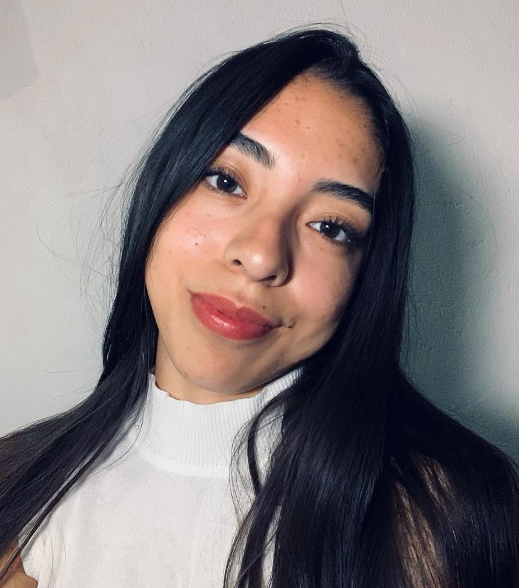

Jazmín Costilla
Diseñadora Gráfica
Ramos Arizpe, Coahuila

Declaración de Objetivos
Diseñadora Grafica con cuatro años de experiencia en la creación de diseños visuales utilizando ilustraciones digitales, imagenes y fotografías. Comprometida a ayudar a los clientes a dar forma a su identidad de marca mediante el uso de diseños gráficos convenientes.
Educación
- Licenciatura en Diseño Grafico, Universidad Vizcaya de la Américas, Campus Saltillo (2015-2017)
Experiencia Laboral
- Diseñadora Grafica, Natural S.A. Monterrey (2019)
- Rediseño de dos logotipos para nuevos clientes de la empresa
- Diseño de contenidos visuales para redes sociales.
- Diseño de contenidos visuales para redes sociales.
- Refrescamiento de la identidad visual de la marca.
- Diseño de contenidos visuales para redes sociales.
- Diseño de piezas gráficas para soportes publicitarios.
Habilidades
- Dominio de herramientas de diseño (Adobe Photoshop, Adobe illustrator, Adobe InDesign, Adobe Premiere Pro)
- Diseño de contenidos para redes sociales
- Creatividad
- Ingenio
- Comunicación asertiva
- Fotografia
Premios
- Curso de Ilustración difital orientada al producto.
- Certificado de conceptualización y branding.
- Certificado en creación de un logotipo desde cero.
Pasatiempos
- Deportes al aire libre
- La música y el baile
- Realizar algunos ejercicios de la meditación
- Ver series o peliculas
Contacto